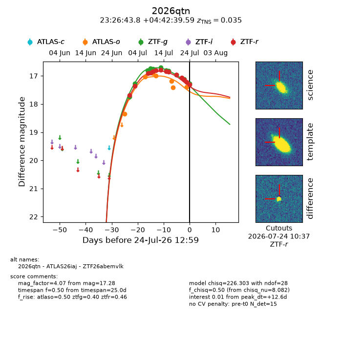
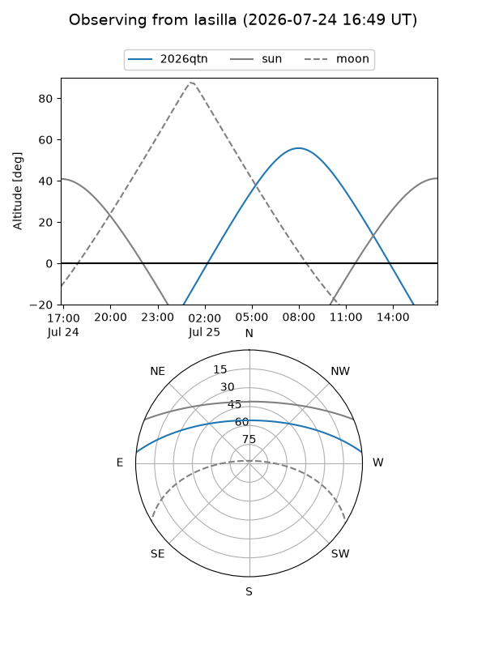
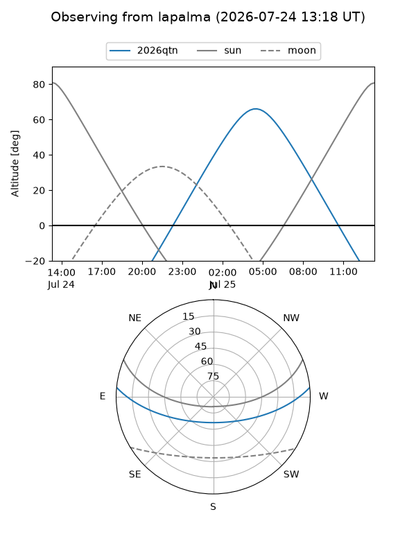
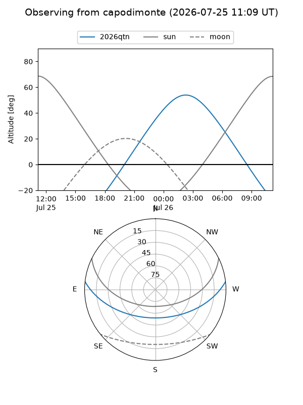
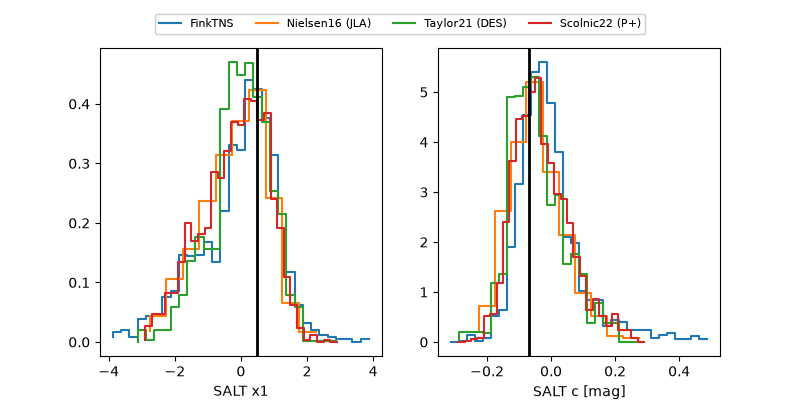

2026qtn
Target 2026qtn at 2026-07-24 13:01
Aliases and brokers:
FINK-ZTF: ztf.fink-portal.org/ZTF26abemvlk
Lasair-ZTF: lasair-ztf.lsst.ac.uk/objects/ZTF26abemvlk
ALeRCE-ZTF: alerce.online/object/ZTF26abemvlk
YSE-PZ: ziggy.ucolick.org/yse/transient_detail/2026qtn
TNS name: wis-tns.org/object/2026qtn
Direct TNS query: direct search
alt names
ZTF26abemvlk (ztf,fink_ztf)
2026qtn (tns,yse)
ATLAS26iaj (atlas)
Coordinates:
equatorial (ra, dec) = 351.6825,+4.71100
equatorial (HMS+DMS) = 23:26:43.80,+04:42:39.59
galactic (l, b) = (87.0039,-52.15121)
Flags:
TNS type: SN Ia-91T-like
TNS redshift: 0.0350
peak dt: +12.6
Photometry:
last atlaso=17.40, ztfg=17.28, ztfr=17.32
7 atlaso, 11 ztfg, 14 ztfr detections
Lightcurve

Visibility



Additional plots
